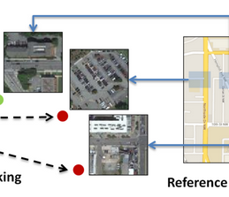

| News |
- July 2017: paper accepted to ICCV 2017
- May 2017: I am interning at Amazon Berlin this summer
- July 2016: paper accepted to ECCV 2016
- June 2016: I will be interning at Google Research this summer
- May 2015: I will be interning at Google this summer.
- January 2015: paper accepted to ICRA 2015.
- February 2014: paper accepted to CVPR 2014.
|
Publications
|
 |
Generalization in Metric Learning: Should the Embedding Layer be the Embedding Layer?
Nam Vo and James Hays
[arxiv] [code] |
|
Revisiting IM2GPS in the Deep Learning Era
Nam Vo, Nathan Jacobs and James Hays
ICCV 2017 [webpage] |
|  |
Localizing and Orienting Street Views Using Overhead Imagery
Nam N. Vo and James Hays
ECCV 2016 [webpage] [pdf] |
|
Augmenting physical state prediction
through structured activity inference
Nam N. Vo and Aaron F. Bobick
ICRA 2015 [webpage] [pdf] |
|
Sequential Interval Network for Parsing
Complex Structured Activity
Nam N. Vo and Aaron F. Bobick
CVIU 2016 [Link]
From Stochastic Grammar to Bayes Network: Probabilistic Parsing of
Complex Activity
Nam N. Vo and Aaron F. Bobick
CVPR 2014 [webpage] [pdf]
.
|
|
Anticipating human actions for
collaboration in the presence of task and sensor uncertainty
Kelsey P. Hawkins, Shray Bansal, Nam N. Vo, and Aaron F. Bobick
ICRA 2014 [pdf]
Modeling structured
activity to support human-robot collaboration in the presence of task
and sensor uncertainty
Kelsey P. Hawkins, Shray Bansal, Nam Vo, and Aaron F. Bobick
IROS Workshop on Cognitive Robotics Systems 2013 [pdf]
. |
| |
Probabilistic Human Action Prediction and
Wait-Sensitive Planning for Responsive Human-Robot Collaboration
Kelsey P. Hawkins, Nam Vo, Shray Bansal, and Aaron F. Bobick
IEEE-RAS International Conference on Humanoid Robots (Humanoids) 2013 [pdf] |
 |
Context Tracker: Exploring Supporters and
Distracters in Unconstrained Environments
T. B. Dinh, N. Vo, and G. Medioni
CVPR 2011 [pdf]
Robust Visual Tracking
Using Randomized Forest and Online Appearance.
Nam N. Vo, Quang M. Tran, Thang B. Dinh, and Tien B. Dinh,
ACIIDS 2011 [pdf]
. |
 |
High Resolution Face Sequences from A PTZ
Network Camera
T. B. Dinh, N. Vo, and G. Medioni
FG 2011 [pdf] |

|
An Efficient Human-Computer Interaction
Framework Using Skin Color Tracking and Gesture Recognition
Nam N. Vo, Quang M. Tran, Thang B. Dinh, and Tien B.
Dinh
IEEE RIVF 2010 [pdf] |
Misc
|
L, N. |

{kind=link}